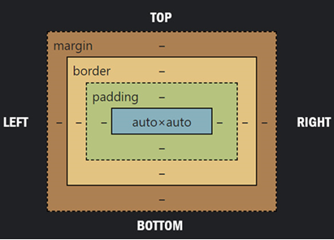
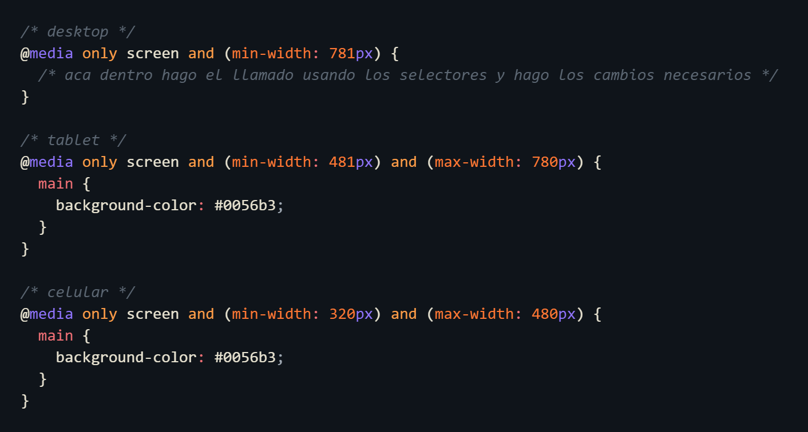

CSS
El CSS es un lenguaje basado en reglas: cada usuario define las reglas que especifican los grupos de estilos que van a aplicarse a elementos
Su nomeclatura por default al crear el archivo es style.css
Visite la siguente pagina para ver
una guia completa

TIPOS DE SELECTORES
-
*
estilos universal
-
p
estilos de tipo
-
.mi-clase
estilos de clase
-
.mi-clase p
estilos de párrafo dentro de una clase
-
#mi-id
estilos de ID
-
#mi-id p
estilo de párrafo dentro de ID
-
footer
estilo de etiquetas
-
h2 + p
estilo para párrafo que continúa a un h2
-
h1, h2, h3
estilos múltiples
-
h2 ~ p
estilos para todos los párrafos que siguen a un h2
TIPOS DE PSEUDO-CLASSES
-
:hover
Aplica estilos cuando el mouse se posiciona sobre el elemento.
-
:active
Aplica estilos cuando el elemento está siendo activado, típicamente al hacer clic.
-
:focus
Aplica estilos cuando el elemento tiene el foco.
-
:visited
Aplica estilos a enlaces que han sido visitados.
-
:link
Aplica estilos a los link abiertos, para que sepas en que pagina estas
UNIDADES DE MEDIDA
-
Fijas o Absolutas
px
-
Relativas
%: donde 100% sería todo el espacio del contenedor
rem: Equivale a 1rem = 16 px que trae por defecto
em: Equivale a 1em = (tamaño de letra que le asigno manualmente en el inicio del CSS)
-
fraccion
fr es una medida de fraccion que solo se usa en grid
COMO AGREGAR UNA FUENTE
-
Buscar fuentes en Google Fonts
Podemos buscar fuentes en Google Fonts, copiamos el link que nos proporciona y lo pegamos en el HTML y en el CSS para ingresar una fuente tipográfica. Luego, tendremos que llamarla para usarla.
-
Fuentes predeterminadas del equipo
Podemos usar las fuentes predeterminadas que ya trae el equipo.
-
Agregar nuevas fuentes al proyecto
Podemos agregar nuevas fuentes descargando la carpeta y añadiéndola a nuestro proyecto.
PROPIEDADES DE TEXTO
-
font.size
Tamaño de la fuente
Algunas Propiedades
font-size: clamp(15px, 3vw, 65px);
Fija un valor medio dentro de un rango de valores entre un límite mínimo definido y un límite máximo. La función toma tres parámetros: un valor mínimo, un valor preferido y un valor máximo permitido.
Le permite establecer un tamaño de fuente que crece con el tamaño de la ventanilla, pero que no va por debajo de un tamaño de fuente mínimo o por encima de un tamaño de fuente máximo.font-family:
Familia tipográfica
font-weight:
Grosor de la fuente
font-style:
Estilo de fuente, inclinada o normal
Font-variant:
Define el aspecto de una familia tipográfica, normal, cursiva
list-style:
Estilo de la lista, es decir si tiene un punto negro o cuadrado
line-height:
Altura de la línea
letter-spacing:
controla el espacio entre caracteres en un texto. Esta propiedad permite ajustar la distancia entre letras
text-decoration:
El subrayado del texto
text-align:
Alineación del texto
color:
Color del texto
cursor:
que se active la manito como si fuera un link
FONDO DE LA PAGINA
-
background-color:
Color de fondo
-
background-image:
Imagen de fondo
-
background-position:
Posición inicial de la imagen de fondo
-
backdrop-filter:
Filtro de fondo (puede servir para darle un degradado)
-
background-repeat:
Decidir si quieres que la foto se repita o no
-
background-size:
Tamaño real de la foto o ajuste al contenedor (puede ser cover)
PROPIEDADES DE CAJAS
-
width:
Define el ancho de un elemento
-
height:
Define el alto de un elemento
-
min-width:
define el ancho manimo de un elemento
-
max-width:
define el ancho maximo de un elemento
-
min-height
Define el alto minimo de un elemento
-
max-height
Define el alto miximo de un elemento
-
top:
Posición superior de un elemento
-
right:
Posición derecha de un elemento
-
bottom:
Posición inferior de un elemento
-
left:
Posición izquierda de un elemento
-
margin:
Distancia entre un elemento y otro
-
padding:
Distancia desde el borde de un elemento hasta su contenido
-
border:
Define el borde de un elemento, su color, estilo y grosor
-
box-shadow
Agrega sombras exteriores o interiores con la palabra inset pagina para generar sombras
POSITION
-
Absolute
La ubicacion que declaremos será fija, siempre en relación a los margenes de la pagina entera. Para manipularlo usamos top, bottom, left, right
-
Relative
Es igual que el absolute pero este toma como referencia la ubicacion del elemento. Para manipularlo usamos top, bottom, left, right
-
Fixed
Es como un chicle ya que "queda fija", se queda pegado siempre. En este caso tambien toma como referencia a la pagina entera, sin importar donde inicie. Para manipularlo usamos top, bottom, left, right
-
Static
Por default, no se mueve de su posición original y se coloca según el flujo normal del documento
-
Sticky
A diferencia del
fixed, solo se queda pegado una vez que llega al top del body. -
z-index
Se utiliza para especificar qué elemento debe aparecer encima de los demás en el eje Z, Los elementos con un valor de z-index mayor se sitúan sobre aquellos con valores menores
-
order
Se utiliza para especificar el orden de los elementos.
DISPLAY
-
display: block
Hace que el elemento sea un bloque que ocupa todo el ancho disponible.
-
display: inline
Hace que el elemento sea un elemento en línea, ocupando solo el ancho necesario.
-
display: inline-block;
Combina las características de elementos en línea y en bloque.
-
display: flex;
Establece un contenedor como un contenedor flexible, activando el modelo de caja flexible en sus elementos hijos.
Propiedades para los elementos
(flex container)
display
Esto define un contenedor flexible; en línea o en bloque dependiendo del valor dado. Permite un contexto flexible para todos sus elementos secundarios directos.
.container { flex-direction: row | row-reverse | column | column-reverse; }Tenga en cuenta que las columnas CSS no tienen ningún efecto en un contenedor flexible.
flex-direction

Esto establece el eje principal, definiendo así la dirección en la que se colocan los elementos flexibles en el contenedor flexible. Flexbox es (aparte del envoltorio opcional) un concepto de diseño de una sola dirección. Piense en los elementos flexibles como si se dispusieran principalmente en filas horizontales o columnas verticales.
.container { flex-direction: row | row-reverse | column | column-reverse; }-
row (predeterminado):
De izquierda a derecha
row-reverse: de derecha a izquierda enltr; de izquierda a derecha enrtlcolumn: igual querowpero de arriba hacia abajocolumn-reverse: igual querow-reversepero de abajo hacia arriba
flex-wrap

De forma predeterminada, todos los elementos flexibles intentarán caber en una línea. Puede cambiar eso y permitir que los elementos se ajusten según sea necesario con esta propiedad.
.container { flex-wrap: nowrap | wrap | wrap-reverse; }nowrap(predeterminado): todos los elementos flexibles estarán en una líneawrap: los elementos flexibles se envolverán en varias líneas, de arriba hacia abajo.wrap-reverse: los elementos flexibles se envolverán en varias líneas de abajo hacia arriba.
flex-flow
Esto es una forma abreviada para las propiedades
flex-directionyflex-wrap, las cuales juntas definen los ejes principal y transversal del contenedor flexible. El valor predeterminado esrow nowrap..container { flex-flow: column wrap; }justify-content

Esto define la alineación a lo largo del eje principal. Ayuda a distribuir el espacio libre adicional sobrante cuando todos los elementos flexibles de una línea son inflexibles o son flexibles pero han alcanzado su tamaño máximo. También ejerce cierto control sobre la alineación de los elementos cuando desbordan la línea..container { justify-content: flex-start | flex-end | center | space-between | space-around | space-evenly | start | end | left | right ... + safe | unsafe; }align-items

Esto define el comportamiento predeterminado para cómo se disponen los elementos flexibles a lo largo del eje transversal en la línea actual. Piensa en ello como la versión dejustify-contentpara el eje transversal (perpendicular al eje principal)..container { align-items: stretch | flex-start | flex-end | center | baseline | first baseline | last baseline | start | end | self-start | self-end + ... safe | unsafe; }align-content

Esto alinea las líneas de un contenedor flexible cuando hay espacio adicional en el eje transversal, de manera similar a cómojustify-contentalinea elementos individuales en el eje principal.Nota: Esta propiedad solo tiene efecto en contenedores flexibles de varias líneas, donde
flex-wrapestá establecido enwrapowrap-reverse). Un contenedor flexible de una sola línea (es decir, dondeflex-wraptiene su valor predeterminado,no-wrap) no reflejaráalign-content..container { align-content: flex-start | flex-end | center | space-between | space-around | space-evenly | stretch | start | end | baseline | first baseline | last baseline + ... safe | unsafe; }gap, row-gap, column-gap

La propiedad
gapcontrola explícitamente el espacio entre elementos flexibles. Aplica ese espaciado solo entre los elementos, no en los bordes exteriores..container { display: flex; ... gap: 10px; gap: 10px 20px; /* row-gap column gap */ row-gap: 10px; column-gap: 20px; }El comportamiento podría considerarse como un gutter mínimo, como si el gutter fuera de alguna manera más grande (debido a algo como
justify-content: space-between;), entonces el espacio solo tendrá efecto si ese espacio termina siendo más pequeño.No es exclusivo para flexbox,
gaptambién funciona en grid y en el diseño de varias columnas.Propiedades para los elementos
(flex items)
order

Por defecto, los elementos flexibles se disponen en el orden de origen. Sin embargo, la propiedadordercontrola el orden en el que aparecen en el contenedor flexible..item { order: 5; /* default is 0 */ }Los elementos con el mismo
ordervuelven al orden de origen.flex-grow

Esto define la capacidad de un elemento flexible para crecer si es necesario. Acepta un valor sin unidades que sirve como proporción. Dicta la cantidad de espacio disponible dentro del contenedor flexible que el elemento debería ocupar.Si todos los elementos tienen
flex-growestablecido en1, el espacio restante en el contenedor se distribuirá equitativamente entre todos los hijos. Si uno de los hijos tiene un valor de2, ese hijo ocuparía el doble del espacio que cualquiera de los otros (o al menos lo intentará)..item { flex-grow: 4; /* default 0 */ }Los números negativos no son válidos.
flex-shrink
Esto define la capacidad de un elemento flexible para contraerse si es necesario.
.item { flex-shrink: 3; /* default 1 */ }Los números negativos no son válidos.
flex-basis
Esto define el tamaño predeterminado de un elemento antes de que se distribuya el espacio restante. Puede ser una longitud (por ejemplo, 20%, 5rem, etc.) o una palabra clave. La palabra clave
autosignifica "mira mi propiedad de ancho o alto" (lo que se hacía temporalmente con la palabra clavemain-sizehasta que fue desaprobada). La palabra clavecontentsignifica "ajústalo según el contenido del elemento" - esta palabra clave aún no tiene un buen soporte, por lo que es difícil de probar y aún más difícil saber qué hacen sus equivalentesmax-content,min-contentyfit-content..item { flex-basis: | auto; /* default auto */ }Si se establece en
0, el espacio adicional alrededor del contenido no se tiene en cuenta. Si se establece enauto, el espacio adicional se distribuye según su valor deflex-grow. Consulta esta gráfica.flex
Esto es la forma abreviada de
flex-grow,flex-shrinkyflex-basiscombinados. Los segundos y terceros parámetros (flex-shrinkyflex-basis) son opcionales. El valor predeterminado es0 1 auto, pero si lo configuras con un solo valor numérico, comoflex: 5;, eso cambia elflex-basisa 0%, por lo que es como configurarflex-grow: 5; flex-shrink: 1; flex-basis: 0%;..item { flex: none | [ <'flex-grow'> <'flex-shrink'>? || <'flex-basis'> ] }Se recomienda que utilices esta propiedad abreviada en lugar de establecer las propiedades individuales. La propiedad abreviada establece los otros valores de manera inteligente.
align-self

Esto permite que la alineación predeterminada (o la especificada poralign-items) sea anulada para elementos flexibles individuales.Por favor, consulta la explicación de
align-itemspara entender los valores disponibles..item { align-self: auto | flex-start | flex-end | center | baseline | stretch; }Ten en cuenta que
float,clearyvertical-alignno tienen efecto en un elemento flexible. -
-
display: grid
Permite distribuir un sitio web en una cuadrícula, teniendo el control total sobre la posición de los elementos, tanto en las filas como en las columnas.
Propiedades para los elementos
(grid container)grid-template-rows
Define las filas de la cuadrícula con una lista de valores separados por espacios. Los valores representan el tamaño, asi como la cantidad de filas y el espacio entre ellos representa la línea de cuadrícula. Ademas podemos abreviar usando la propiedad repeat
grid-template-columns
Define las columnas de la cuadrícula con una lista de valores separados por espacios. Los valores representan el tamaño, asi como la cantidad de columnas y el espacio entre ellos representa la línea de cuadrícula.
grid-template-areas
Define una plantilla de cuadrícula haciendo referencia a los nombres de las áreas de cuadrícula que se especifican con la propiedad "grid-area" en cada contenedor item. Repetir el nombre de un área de cuadrícula hace que el contenido abarque esas celdas. Un punto significa una celda vacía.
.item-a { .container { display: grid; grid-template-columns: 50px 50px 50px 50px; grid-template-rows: auto; grid-template-areas: "header header header header" "main main . sidebar" "footer footer footer footer"; }Eso creará una cuadrícula de cuatro columnas de ancho por tres filas de alto. Toda la fila superior estará compuesta por el área del encabezado. La fila central se compondrá de dos áreas principales, una celda vacía y un área de barra lateral. La última fila es todo pie de página.

row-gap
Permite dejar un espacio entre las filas
column-gap
Permite dejar un espacio entre las columnas
justify-items
Alinea los elementos de cuadrícula a lo largo del eje en línea (fila). Este valor se aplica a todos los elementos de cuadrícula dentro del contenedor align-items.
.container { justify-items: start | end | center | stretch; }Este comportamiento también se puede establecer en elementos de cuadrícula individuales a través de la propiedad.
justify-selfalign-items
Alinea los elementos de cuadrícula a lo largo del eje de bloque (columna). Este valor se aplica a todos los elementos de cuadrícula dentro del contenedor.
.container { align-items: start | end | center | stretch; }Este comportamiento también se puede establecer en elementos de cuadrícula individuales a través de la propiedad.
align-selfTambién hay palabras clave modificadoras y (el uso es como ). La palabra clave significa "intente alinear de esta manera, pero no si eso significa alinear un elemento de manera que se mueva a un área de desbordamiento inaccesible", mientras que permitirá mover contenido a áreas inaccesibles ("pérdida de datos").
safeunsafealign-items: safe endsafeunsafejustify-content
Puede establecer la alineación de la cuadrícula dentro del contenedor de cuadrícula. Esta propiedad alinea la cuadrícula a lo largo del eje en línea (fila).
.container { justify-content: start | end | center | stretch | space-around | space-between | space-evenly; }align-content
Puede establecer la alineación de la cuadrícula dentro del contenedor de cuadrícula. Esta propiedad alinea la cuadrícula a lo largo del eje del bloque (columna)
Valores:
.container { align-content: start | end | center | stretch | space-around | space-between | space-evenly; }place-items
Establece las propiedades align-items y justify-items en una sola propiedad. El primer valor establece , el segundo valor . Si se omite el segundo valor, el primer valor se asigna a ambas propiedades.
.center { display: grid; place-items: center; }Propiedades para los elementos
(grid itens)Es probable que termines usando muchas unidades fraccionarias en CSS Grid, como . Esencialmente significan "porción del espacio restante". Por lo tanto, una declaración como:
1frgrid-template-columns: 1fr 3fr;Significa, a grandes rasgos, . Excepto que esos valores porcentuales son mucho más firmes que las unidades fraccionarias. Por ejemplo, si agregó relleno a esas columnas basadas en porcentajes, ahora ha roto el 100 % del ancho (suponiendo un modelo de caja). Las unidades fraccionarias también son mucho más amigables en combinación con otras unidades, como puedes imaginar:
25% 75%content-boxgrid-template-columns: 50px min-content 1fr;grid-area
Asigna un nombre a un elemento para que una plantilla creada con la propiedad pueda hacer referencia a él.
.item-a { grid-area: header; } .item-b { grid-area: main; } .item-c { grid-area: sidebar; } .item-d { grid-area: footer; }justify-self
Alinea un elemento de cuadrícula dentro de una celda a lo largo del eje en línea (fila). Este valor se aplica a un elemento de cuadrícula dentro de una sola celda
.item { justify-self: start | end | center | stretch; }align-self
Alinea un elemento de cuadrícula dentro de una celda a lo largo del eje de bloque (columna). Este valor se aplica a un elemento de cuadrícula dentro de una sola celda
.item { align-self: start | end | center | stretch; }place-self
Establece las propiedades align-self y justify-self en una sola propiedad. El primer valor establece , el segundo valor . Si se omite el segundo valor, el primer valor se asigna a ambas propiedades.
Ejemplos:
.item-a { place-self: center; }
.item-a { place-self: center stretch; }
Todos los navegadores principales, excepto Edge, admiten la propiedad abreviada.
place-selfBoostrap
Es un framework el cual integra grid y flex a partir de class. Este tiene codigos css ya predeterminados y al poner la class se aplican, la mejor parte es que vuelve responsive todo el proyecto. para saber mas visita esta pagina
Algunas Propiedades Basicas
class="container"
Un contenedor receptivo de ancho fijo
class="row"
un contenedor en fila
class="col"
para aclarar cuando es una columna
Diseño Responsive
Las media query sirven para hacer que nuestro sitio se vea de cierta forma en cierta situacion. Siempre se pone al final de css. si codeamos desde Desktop a mobile usamos
max-widthy si codeamos desde Mobile a desktop (first mobile) usamosmin-width. Tambien revisar que en el encabezado html tenemos que tener la etiqueta meta viewport.-
Escritorio
El ancho a usar es 781px - sin maximo
-
Tablet
El ancho a usar es 481px - 780px
-
Mobile
El ancho a usar es 320px - 480

{kind=link}
{kind=link}
{kind=link}